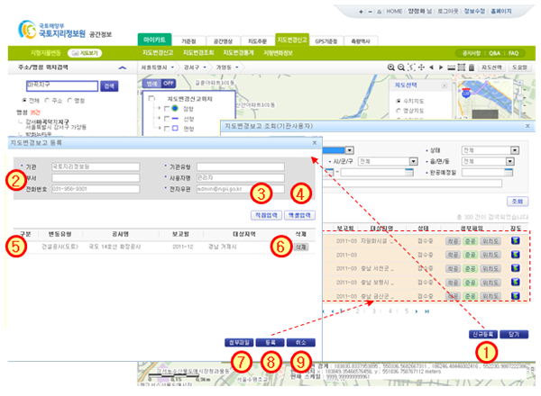

지형지물변동 > 지도변경신고 > 기관신고 >신규등록
| ① | 지도변경보고조회 창에서 [신규등록] 버튼을 클릭하면 지도변경보고 등록 창이 나타난다. |
| ② | 로그인 한 사용자의 정보가 보여진다.(기관사용자 정보 표시) |
| ③ | [직접입력] : 보고할 신규공사를 사업별 개별 입력하여 바로 등록한다.(16페이지 참조) |
| ④ | [엑셀입력] : 엑셀로 작성된 사업현황을 일괄 등록 입력하는 창이 나타난다. |
| ※ 입력결과는 ⑤에 표시한다.(17페이지 참조) | |
| ⑤ | 직접입력 또는 엑셀로 일괄 입력한 목록이 표시된다.(접수되지 않은 공사건으로 존재) |
| ⑥ | [삭제]: 버튼을 클릭하여 입력한 공사건을 삭제한다. |
| ⑦ | [첨부파일] : 버튼을 클릭하면 첨부파일 일괄 등록 화면이 나타난다. |
| ※ 첨부파일 일괄 등록은 공사건별 첨부파일을 등록하지 않고, 일괄 등록하는 기능으로 국토지리정보원 업무 담당자가 일괄 등록된 첨부파일을 확인하여 다시 등록 해야 한다. |
|
| ⑧ | [등록] : 공사정보가 “접수중” 상태가 되고 지도변경정보 조회 화면으로 돌아간다.(12페이지 참조) |
| ⑨ | [취소] : 지도변경보고 등록 창이 종료되고 지도변경정보 조회 화면으로 돌아간다.(12페이지 참조) |